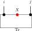

The Algebraic Fundamental Theorem
This chapter develops the one-dimensional MPS results of [ MGRPG\(^{+}\)18 ] : the Fundamental Theorem for injective and normal MPS on a finite periodic chain of fixed length. The argument is purely algebraic, working directly with \(M_{D}(\mathbb {C})\). Two preparatory lemmas—the virtual bond gauge (Lemma .13) and the proportionality lemma (Lemma .14)—carry the entire argument, yielding the main theorem and its corollaries for translation-invariant chains, non-translation-invariant descriptions of translation-invariant states, and blocked chains.
Throughout, \(D\) is the bond dimension and \(d\) is the physical dimension with \(d \ge D^2\). The extensions to injective and normal PEPS on arbitrary graphs and the improved system-size bound (\(2L+1\) in place of \(3L\)) are not pursued in this chapter. The non-translation-invariant chain data, including same chain state, injectivity, and cyclic gauge equivalence, is set up below.
Alternative fixed-length non-TI setup
The algebraic proof of [ MGRPG\(^{+}\)18 ] keeps a fixed periodic chain length and allows the local tensors to vary from site to site. The first step is therefore a separate setup for finite non-translation-invariant chains.
MPSChainTensor, MPSChainTensor.coeff, MPSChainTensor.SameState, MPSChainTensor.IsInjective, MPSChainTensor.GaugeEquiv def:mps_tensor, def:injective Fix a chain length \(n\). A non-translation-invariant periodic MPS chain consists of sitewise tensors
where each \(A_k^i \in M_{D}(\mathbb {C})\). For a basis configuration \(\sigma = (\sigma _0,\dots ,\sigma _{n-1})\), its coefficient is
Two such chains generate the same chain state if these coefficients agree for every \(\sigma \). The chain is injective if each local tensor \(A_k\) is injective in the usual single-site sense. Finally, two chains are cyclically gauge equivalent if there are invertible bond matrices \(Z_0,\dots ,Z_{n-1}\) such that
for every site \(k\) and physical index \(i\), with indices understood modulo \(n\) so that \(Z_n = Z_0\). Locally, this gauge relation is represented by
where the black node denotes the site tensor named in the surrounding formula and the two red side nodes denote the bond gauges on the neighboring virtual legs.
MPSChainTensor.GaugeEquiv.refl MPSChainTensor.GaugeEquiv.symm MPSChainTensor.GaugeEquiv.trans def:non_ti_chain On fixed-length periodic chains, cyclic gauge equivalence is reflexive, symmetric, and transitive.
One-sided inverse and decomposition
If \(A\) is injective, the linear combination map \(\Phi _A(c) := \sum _{i} c_i A^i : \mathbb {C}^d \to M_{D}(\mathbb {C})\) is surjective and admits a right inverse.
MPSTensor.IsInjective.exists_rightInverse def:injective If \(A\) is injective, then there exists a \(\mathbb {C}\)-linear map \(\Psi : M_{D}(\mathbb {C}) \to \mathbb {C}^d\) satisfying \(\Phi _A \circ \Psi = \mathrm{id}_{M_{D}(\mathbb {C})}\).
MPSTensor.decompositionMap def:injective, lem:exists_rightInverse Let \(A\) be an injective MPS tensor. The decomposition map \(\Psi _A : M_{D}(\mathbb {C}) \to \mathbb {C}^d\) is a fixed choice of right inverse of \(\Phi _A\).
MPSTensor.IsInjective.exists_decomposition def:decomposition_map If \(A\) is injective, then for every \(X \in M_{D}(\mathbb {C})\) there exist coefficients \(c \in \mathbb {C}^d\) such that
When \(d {\gt} D^2\), the map \(\Phi _A\) has a nontrivial kernel, so the section \(\Psi _A\) is not unique. The statements that follow depend only on \(\Phi _A \circ \Psi _A = \mathrm{id}\), so the choice does not affect the conclusions.
Physical realisation of virtual insertions
For an injective tensor \(A\), the physical realisation map encodes the effect of inserting a virtual matrix \(X\) on the bond as a \(d \times d\) operation on the physical indices.
MPSTensor.physRealize def:decomposition_map Let \(A\) be an injective tensor. For \(X \in M_{D}(\mathbb {C})\), define the \(d \times d\) matrix \(O_A(X) \in M_{d}(\mathbb {C})\) by
so that row \(i\) of \(O_A(X)\) contains the decomposition coefficients of \(A^i X\) in the spanning set \(\{ A^j\} \). Diagrammatically, the inserted virtual matrix is re-expressed as a physical operation on the same local tensor:
The map \(X \mapsto O_A(X)\) is \(\mathbb {C}\)-linear.
MPSTensor.physRealize_spec def:phys_realize, def:decomposition_map For every \(X \in M_{D}(\mathbb {C})\) and every physical index \(i\),
MPSTensor.physRealize_mul def:phys_realize, lem:physRealize_spec, def:injective Let \(A\) be an injective MPS tensor. For all \(X, Y \in M_{D}(\mathbb {C})\),
Multiply by \(Y\) on the right and apply the linear map \(\Psi _A\):
Taking the \(k\)th component of both sides gives
Since this holds for all \(i\) and \(k\), the matrices are equal.
thm:physRealize_mul, def:injective, def:decomposition_map When \(d {\gt} D^2\), the decomposition map \(\Psi _A\) need not be unique. Nevertheless, Theorem .9 is already the general injective statement: for the fixed choice of \(\Psi _A\) in Definition .4, the associated physical realisation map \(O_A\) is multiplicative. This supersedes the earlier basis-only formulation.
Intermediate lemmas
MPSTensor.chainCombinedTensor_isInjective def:injective, def:blocked_tensor Let \(A_0, \ldots , A_{m-1}\) be injective MPS tensors with compatible bond dimensions. Then the blocked tensor \((A_0 \otimes \cdots \otimes A_{m-1})^{(i_0,\ldots ,i_{m-1})} := A_0^{i_0} A_1^{i_1} \cdots A_{m-1}^{i_{m-1}}\) is again injective.
Matrix.isScalar_of_commute_span_eq_top If \(Z \in M_{D}(\mathbb {C})\) commutes with every element of \(M_{D}(\mathbb {C})\), then \(Z = \lambda \mathbb {1}_D\) for some \(\lambda \in \mathbb {C}\).
Same state forces a virtual bond gauge
This section presents the 3-site virtual-bond statement used later in the proof of the PEPS fundamental theorem. Here the hypothesis is already the all-length MPV equality of the combined tensors, and the conclusion is the conjugacy of the middle-bond insertion data.
MPSTensor.virtual_bond_gauge thm:physRealize_mul, thm:simplicity, thm:skolem_noether Let \(A = (A_0, A_1, A_2)\) and \(B = (B_0, B_1, B_2)\) be two 3-site injective periodic chains with common bond dimension \(D \ge 1\) and \(\mathcal{V}(A) = \mathcal{V}(B)\) (same MPV family). Then at the middle bond there exists an invertible matrix \(Z \in \mathrm{GL}_D(\mathbb {C})\) such that the virtual-insertion trace coefficients agree after conjugation:
for all \(X \in M_{D}(\mathbb {C})\) and all physical indices \(i_0, i_1, i_2\).
In [ MGRPG\(^{+}\)18 , Lemma 1 ] , the statement is given for arbitrary chain length \(n \ge 3\) and any bond position, with uniqueness of \(Z\) up to scalar. The chain-level generalization to arbitrary \(n \ge 3\) and any bond position is not pursued here.
Aligned gauges force proportionality
After applying Lemma .13 to each bond and absorbing the gauge matrices, one obtains two chains whose virtual-insertion operations agree on every bond. Lemma 2 of [ MGRPG\(^{+}\)18 ] shows that this agreement forces the local tensors to be proportional.
MPSTensor.tensor_proportional def:injective, def:decomposition_map, lem:center_scalar Let \(A_1, A_2\) and \(B_1, B_2\) be injective MPS tensors with the same bond dimension \(D\). Suppose that for all \(X \in M_{D}(\mathbb {C})\) (on the internal bond), all \(Y \in M_{D}(\mathbb {C})\) (on the external bond), and all physical indices \(i,j\),
(A_2^j Y A_1^i) & = (B_2^j Y B_1^i)

while the insertion \(Y\) on the outer trace bond (Eq. .14) is:

so the two hypotheses distinguish the internal and external virtual loops of the two-site periodic chain.
Then there exists a nonzero scalar \(\lambda \in \mathbb {C}^{\times }\) such that
for all physical indices \(i, j\).
Write \(\mathbb {1}_D = \sum _j c_j A_2^j\) using the decomposition map \(\Psi _{A_2}\), and define \(Z := \sum _j c_j B_2^j \in M_{D}(\mathbb {C})\). This is the point where the two-site comparison collapses to a single boundary matrix:
The first product identity gives \(A_1^i = Z B_1^i\), and the second gives \(A_1^i = B_1^i Z\). Hence \(Z\) commutes with every \(B_1^i\); since \(\{ B_1^i\} \) spans \(M_{D}(\mathbb {C})\), \(Z\) is central. By Lemma .12, \(Z = \lambda \mathbb {1}_D\) for some \(\lambda \in \mathbb {C}^{\times }\) (nonzero since the tensors are nonzero). Thus \(A_1^i = \lambda B_1^i\), and substituting into the first product identity forces \(A_2^j = \lambda ^{-1} B_2^j\).
The Fundamental Theorem for injective chains
The chain result below combines the site and physical indices into a single physical index and applies the single-block Fundamental Theorem to the resulting tensor. The fixed-length same-state statement requires a separate same-state reduction hypothesis.
MPSChainTensor.fundamentalTheorem_injective_chain def:non_ti_chain, def:same_mpv Let \(\mathbf{A} = (A_0, \ldots , A_{n-1})\) and \(\mathbf{B} = (B_0, \ldots , B_{n-1})\) be two \(n\)-site chains with common bond dimension \(D\), and assume that \(\mathbf{A}\) is injective. Suppose that, after combining the site index and physical index into a single MPS tensor, the resulting two tensors generate the same MPV family. Then \(\mathbf{A}\) and \(\mathbf{B}\) are cyclically gauge equivalent.
MPSTensor.chainCombinedTensor_smul_chain def:non_ti_chain Let \(\mathbf{A} = (A_0, \ldots , A_{n-1})\) be an \(n\)-site chain and let \(\zeta \in \mathbb {C}\). If \(\zeta \mathbf{A}\) denotes the chain obtained by replacing each site tensor \(A_k\) with \(\zeta A_k\), and if \(\widetilde{\mathbf{A}}\) denotes the combined tensor of \(\mathbf{A}\), then
MPSChainTensor.fundamentalTheorem_injective_chain_gaugePhase thm:fundamentalTheorem_injective_chain, def:gauge_phase_equiv, def:non_ti_chain Let \(\mathbf{A} = (A_0, \ldots , A_{n-1})\) and \(\mathbf{B} = (B_0, \ldots , B_{n-1})\) be two \(n\)-site chains with common bond dimension \(D\), and assume that \(\mathbf{A}\) is injective. Suppose that the combined tensors \(\widetilde{\mathbf{A}}\) and \(\widetilde{\mathbf{B}}\) are gauge-phase equivalent. Then there exist invertible matrices \(Z_0, \ldots , Z_{n-1} \in \mathrm{GL}_D(\mathbb {C})\) and a nonzero scalar \(\zeta \in \mathbb {C}^{\times }\) such that
for all sites \(k\) and physical indices \(i\), where \(k+1\) is interpreted cyclically modulo \(n\).
From fixed-length chain states to combined-tensor MPV agreement
MPSChainTensor.SameStateBridgeHyp def:non_ti_chain, def:same_mpv A same-state reduction hypothesis for dimensions \((d,D)\) is the assertion that whenever \(\mathbf{A}\) is an injective \(n\)-site chain with \(n \ge 3\) and \(\mathbf{A},\mathbf{B}\) generate the same chain state, then the combined tensors of \(\mathbf{A}\) and \(\mathbf{B}\) generate the same MPV family.
MPSChainTensor.sameMPV_chainCombined_of_sameState def:same_state_reduction_hyp, def:non_ti_chain, def:same_mpv Assume a same-state reduction hypothesis for \((d,D)\). Let \(\mathbf{A}\) and \(\mathbf{B}\) be \(n\)-site chains with common bond dimension \(D\), with \(n \ge 3\), and assume that \(\mathbf{A}\) is injective. If \(\mathbf{A}\) and \(\mathbf{B}\) generate the same chain state, then the combined tensors of \(\mathbf{A}\) and \(\mathbf{B}\) generate the same MPV family.
MPSChainTensor.fundamentalTheorem_injective_chain_of_sameState def:same_state_reduction_hyp, def:non_ti_chain Assume a same-state reduction hypothesis for \((d,D)\). Let \(\mathbf{A}\) and \(\mathbf{B}\) be \(n\)-site chains with common bond dimension \(D\), with \(n \ge 3\), and assume that \(\mathbf{A}\) is injective. If \(\mathbf{A}\) and \(\mathbf{B}\) generate the same chain state, then \(\mathbf{A}\) and \(\mathbf{B}\) are cyclically gauge equivalent.
thm:fundamentalTheorem_injective_chain, def:injective Theorem .15 treats a fixed chain length and assumes equality of the combined-tensor MPV families. The single-block Fundamental Theorem (Theorem .13) instead studies one tensor at all system sizes and concludes exact gauge equivalence \(B^i = X A^i X^{-1}\). The chain theorem is recovered by converting the chain into one combined tensor; the price is that the hypothesis is all-length MPV equality for that combined tensor rather than equality of the chain state at one fixed length.
Finite-length MPV agreement
MPSTensor.SameMPVFrom def:same_mpv Two tensors \(A\) and \(B\) of the same bond dimension satisfy finite-length MPV agreement from \(N_0\) onward if they generate the same MPV family for all system sizes \(N \ge N_0\), meaning that for every \(N \ge N_0\) and \(\sigma \in [d]^N\),
MPSTensor.sameMPV_of_sameMPVFrom_of_injective def:same_mpv_from, def:injective, def:same_mpv Let \(A\) be an injective tensor of bond dimension \(D \ge 1\), and let \(B\) be a tensor of the same bond dimension. If \(A\) and \(B\) generate the same MPV family for every system size \(N \ge N_0\), then they generate the same MPV family for every system size.
Show that the length-\(N_0\) word span of \(B\) is all of \(M_{D}(\mathbb {C})\) via the linear relation between the length-\(N_0\) word-evaluation maps of \(A\) and \(B\) induced by trace agreement at length \(N_0 + 1\), together with a finrank transfer argument.
Derive \(S = 1\) by trace nondegeneracy: for every \(M \in M_{D}(\mathbb {C})\), \(\tr (M(S - 1)) = 0\).
Downward induction on \(k = N_0 - |w|\): decompose \(\tr (w_A)\) and \(\tr (w_B)\) using \(1 = \sum c_i A^i\) and \(S = 1\) respectively, then apply the inductive hypothesis at length \(|w| + 1\).
MPSTensor.fundamentalTheorem_singleBlock_finiteLength thm:sameMPV_of_sameMPVFrom, thm:ft_single, def:gauge_equiv Let \(A\) be an injective tensor of bond dimension \(D \ge 1\), and let \(B\) be a tensor of the same bond dimension. If \(A\) and \(B\) agree on all MPV coefficients for system sizes \(N \ge N_0\) (for any threshold \(N_0\)), then \(A\) and \(B\) are gauge equivalent.
Corollaries
Translation-invariant chains
MPSChainTensor.ti_tensors_single_gauge def:injective, def:same_mpv Let \(A\) and \(B\) be MPS tensors of bond dimension \(D\), and fix a chain length \(n \ge 1\). Assume that \(A\) is injective and that the combined tensors of the two constant chains \((A, \ldots , A)\) and \((B, \ldots , B)\) generate the same MPV family. Then there exists an invertible matrix \(X \in \mathrm{GL}_D(\mathbb {C})\) such that
for every physical index \(i\).
MPSChainTensor.ti_tensors_collapse_to_single_gauge def:injective, def:same_mpv Let \(A\) and \(B\) be MPS tensors of bond dimension \(D\), and fix a chain length \(n \ge 1\). Assume that \(A\) is injective and that the combined tensors of the two constant chains \((A, \ldots , A)\) and \((B, \ldots , B)\) generate the same MPV family. Then there exist an invertible matrix \(Z \in \mathrm{GL}_D(\mathbb {C})\) and a scalar \(\lambda \in \mathbb {C}^{\times }\) with \(\lambda ^n = 1\) such that
for every physical index \(i\).
Non-translation-invariant descriptions of translation-invariant states
def:same_state_reduction_hyp, def:non_ti_chain Assume a same-state reduction hypothesis for \((d,D)\). Let \(\mathbf{A} = (A_0, \ldots , A_{n-1})\) be an injective non-translation-invariant chain of length \(n \ge 3\). Suppose the state generated by \(\mathbf{A}\) is translation-invariant, i.e. it equals the state generated by the cyclically shifted chain \((A_1, \ldots , A_{n-1}, A_0)\). Then \(\mathbf{A}\) admits a translation-invariant description with the same bond dimension: there exists an injective tensor \(B\) such that the constant chain \((B, \ldots , B)\) generates the same state as \(\mathbf{A}\). Explicitly, \(B^i = A_0^i\, Z_0^{-1}\) (right multiplication, not conjugation), where \(Z_0\) is extracted from the cyclic shift.
Symmetry-theoretic consequences of the Fundamental Theorem, including virtual representations and string order, are developed in Chapter ??.
Blocked chains
MPSTensor.isNBlkInjective_iff_blockTensor_isInjective def:blocked_tensor, def:injective A tensor \(A\) is \(L\)-block injective if and only if its \(L\)-blocked tensor \(A^{[L]}\) is injective.
MPSChainTensor.blockedChain def:blocked_tensor For an MPS tensor \(A\), a blocking length \(L\), and a chain length \(n\), the blocked chain is the constant \(n\)-site chain whose local tensor is the blocked tensor \(A^{[L]}\).
MPSChainTensor.blockedChain_isInjective def:blocked_chain, lem:isNBlkInjective_iff_blockTensor_isInjective If \(A\) is \(L\)-block injective, then the constant blocked chain built from \(A^{[L]}\) is injective at every site.
MPSChainTensor.fundamentalTheorem_blockedChain def:blocked_chain, def:same_mpv Let \(A\) and \(B\) be MPS tensors of bond dimension \(D\), let \(L\) be a blocking length, and let \(n\) be a chain length. Assume that \(A\) is \(L\)-block injective and that the combined tensors of the two constant blocked chains built from \(A^{[L]}\) and \(B^{[L]}\) generate the same MPV family. Then the two blocked chains are gauge equivalent.
The theorem above is the blocked-chain result established here. Recovering sitewise gauges for the original unblocked tensors gives the normal-MPS corollary of [ MGRPG\(^{+}\)18 ] ; that step is outside this blocked-chain statement.
Product algebra construction and per-block gauge
The chain Fundamental Theorem (Theorem .15) handles non-translation-invariant periodic chains. A parallel line of argument addresses block-diagonal tensors: given a family of injective block tensors \(\{ A_k^i\} _{k=0}^{r-1}\) with block dimensions \(D_k\) and a second family \(\{ B_k^i\} \) with per-block \(\mathcal{V}(A_k) = \mathcal{V}(B_k)\), one seeks per-block gauge equivalence \(B_k^i = X_k\, A_k^i\, X_k^{-1}\) for each \(k\) independently, and a global block-permutation plus inner-automorphism decomposition. Throughout this section, assume \(D_k \ge 1\) for every block \(k\).
Per-block linear extension
MPSTensor.perBlockLinearExtension def:injective, def:same_mpv Let \(A_k, B_k\) be MPS tensors of bond dimension \(D_k\) with \(A_k\) injective and \(\mathcal{V}(A_k) = \mathcal{V}(B_k)\) for each block \(k \in \{ 0, \ldots , r{-}1\} \). The per-block linear extension \(T_k : M_{D_k}(\mathbb {C}) \to M_{D_k}(\mathbb {C})\) is the unique \(\mathbb {C}\)-linear map satisfying \(T_k(A_k^i) = B_k^i\) for every physical index \(i\).
MPSTensor.perBlockLinearExtension_mul def:perBlockLinearExtension For each block \(k\), the per-block linear extension \(T_k\) is multiplicative: \(T_k(MN) = T_k(M)\, T_k(N)\) for all \(M, N \in M_{D_k}(\mathbb {C})\).
MPSTensor.perBlockLinearExtension_bijective lem:perBlockLinearExtension_mul Each \(T_k\) is bijective.
Product algebra automorphism
MPSTensor.piAlgEquiv def:perBlockLinearExtension, lem:perBlockLinearExtension_mul, lem:perBlockLinearExtension_bijective The product algebra automorphism is the \(\mathbb {C}\)-algebra equivalence
defined by \(T(M)_k = T_k(M_k)\), where each \(T_k\) is the per-block linear extension. It is an algebra automorphism since each \(T_k\) is a multiplicative, unital, bijective linear map. Diagrammatically, this is the componentwise map on the product algebra obtained by applying the corresponding extension to each summand.
MPSTensor.piAlgEquiv_decomposition def:piAlgEquiv, thm:skolem_noether The product algebra automorphism \(T\) decomposes as a block permutation composed with per-block inner automorphisms: there exist a permutation \(\sigma \in S_r\) (with \(D_{\sigma (k)} = D_k\) for all \(k\)) and invertible matrices \(X_k \in \mathrm{GL}_{D_k}(\mathbb {C})\) such that
for all \(M \in M_{D_k}(\mathbb {C})\) (viewed as supported in block \(k\)) and all \(k\). Equivalently, the product-algebra automorphism first permutes the simple matrix blocks and then acts inside each block by an inner conjugation.
Nondegeneracy of the product trace pairing
MPSTensor.piTrace_mul_right_eq_zero Let \(M = (M_0, \ldots , M_{r-1}) \in \prod _{k} M_{D_k}(\mathbb {C})\). If \(\sum _{k} \tr (M_k N_k) = 0\) for all \(N = (N_0, \ldots , N_{r-1})\), then \(M = 0\).
MPSTensor.piTraceMulRightPi_ker_eq_bot def:injective Let \(\{ A_k\} \) be a family of injective block tensors. The product Gram map \(M \mapsto (k, i \mapsto \tr (M_k \cdot A_k^i))\) is injective.
Gauge equivalence for direct sums
The first lemmas in this section are elementary facts about block-diagonal tensors: they assemble already-known block gauges, and they record the easy consequences of applying the injective single-block theorem to each block separately. They do not derive the block matching appearing in [ CPGSV17a , Theorem II.1 ] . In the source proof, that matching is obtained from BNT overlap, independence, and coefficient comparison; the corresponding global gauge assembly is Theorem .68.
MPSTensor.blockDiagonalGL, MPSTensor.globalGaugeOfBlocks def:block_diagonal_tensor Given per-block gauges \(X_k \in \mathrm{GL}_{D_k}(\mathbb {C})\), first form the dependent block-diagonal element \(\bigoplus _k X_k\) and then reindex the dependent block-coordinate index to the standard index \(\{ 0,\dots ,\sum _k D_k-1\} \) of the assembled tensor. The resulting element of \(\mathrm{GL}_{\sum _k D_k}(\mathbb {C})\) is the global gauge used in the conjugation formula for \(\bigoplus _k \mu _k A_k\).
MPSTensor.toTensorFromBlocks_eq_globalGaugeOfBlocks_conj, MPSTensor.gaugeEquiv_toTensorFromBlocks_of_blockConj def:global_gauge_of_blocks, def:block_diagonal_tensor, def:gauge_equiv If each block satisfies \(B_k^i=X_k A_k^i X_k^{-1}\), then the weighted direct sums satisfy, for every physical index \(i\),
where \(X\) is the flattened block-diagonal gauge of Definition .40. Consequently the two assembled tensors are gauge equivalent with this explicit witness.
MPSTensor.gaugeEquiv_toTensorFromBlocks_of_blockGaugelem:tensor_from_blocks_globalGauge_conj, def:gauge_equiv If each pair \((A_k, B_k)\) is gauge equivalent, then the weighted block-diagonal tensors \(\bigoplus _k \mu _k A_k\) and \(\bigoplus _k \mu _k B_k\) are gauge equivalent.
MPSTensor.gaugeEquiv_toTensorFromBlocks_of_blockGaugePhase_weightlem:tensor_from_blocks_globalGauge_conj, def:gauge_equiv, def:gauge_phase_equiv Let \(A_k, B_k\) be block families, and let \(X_k \in \mathrm{GL}_{D_k}(\mathbb {C})\) and scalars \(\zeta _k \in \mathbb {C}\) satisfy \(B_k^i = \zeta _k \cdot X_k A_k^i X_k^{-1}\) for every block \(k\) and physical index \(i\). If the weights satisfy \(\mu _A(k) = \mu _B(k)\, \zeta _k\), then the weighted block-diagonal tensors \(\bigoplus _k \mu _A(k) A_k\) and \(\bigoplus _k \mu _B(k) B_k\) are gauge equivalent.
Same-index direct-sum lemmas from the single-block theorem
See Definition .39 for the formalized block-diagonal tensor construction. The results in this subsection assume that the block correspondence has already been fixed; they do not prove [ CPGSV17a , Theorem II.1 ] . They are therefore retained here as same-index assembly corollaries, not among the BNT preparation steps used in the source proof or in the after-blocking canonical-form reduction.
MPSTensor.fundamentalTheorem_multiBlock_blocks def:block_diagonal_tensor, def:injective If all block tensors \(A_k\) are injective and the per-block same-MPV condition holds (\(A_k\) and \(B_k\) generate the same MPV family for each \(k\)), then each pair \((A_k, B_k)\) is gauge equivalent.
This is a block-sum reformulation of the per-block injective single-block FT: the block pairing \((A_k, B_k)\) is assumed already given and the blocks already matched. It is not the multi-block Fundamental Theorem of [ CPGSV17a , Theorem II.1, lines 349–352 ] , which derives the block matching and permutation from only the global same-MPV hypothesis.
MPSTensor.sameMPV_toTensorFromBlocks_of_blockSameMPV def:block_diagonal_tensor, def:same_mpv If \(A_k\) and \(B_k\) generate the same MPV family for each block \(k\), then the block-diagonal tensors \(\bigoplus _k \mu _k A_k\) and \(\bigoplus _k \mu _k B_k\) also generate the same MPV family.
This is a direct-sum congruence statement: per-block MPV equality lifts to global MPV equality via the block-diagonal decomposition formula.
MPSTensor.fundamentalTheorem_multiBlock_global def:block_diagonal_tensor, def:injective, def:same_mpv, lem:multi_block_ft If each block \(A_k\) is injective and each pair \((A_k, B_k)\) generates the same MPV family, then the block-diagonal tensors \(\bigoplus _k \mu _k A_k\) and \(\bigoplus _k \mu _k B_k\) are gauge equivalent.
This combines per-block gauges into a block-diagonal gauge for the global assembled tensor, given pre-matched same-index blocks. It is not the FT block-matching theorem: it does not derive the block pairing or permutation from a global same-MPV hypothesis; the block correspondence is assumed in advance.
MPSTensor.fundamentalTheorem_multiBlock_full def:injective, def:same_mpv, def:gauge_equiv, def:block_diagonal_tensor, lem:tensor_from_blocks_globalGauge_conj Let \(\{ A_k\} _{k=0}^{r-1}\) and \(\{ B_k\} _{k=0}^{r-1}\) be two families of MPS tensors with block dimensions \(D_k\), each \(A_k\) injective, and \(\mathcal{V}(A_k) = \mathcal{V}(B_k)\) for all \(k\). Then:
Per-block gauge equivalence: \(B_k^i = X_k\, A_k^i\, X_k^{-1}\) for some \(X_k \in \mathrm{GL}_{D_k}(\mathbb {C})\), for every \(k\) and \(i\).
Global gauge equivalence: the block-diagonal tensors \(\bigoplus _k \mu _k A_k\) and \(\bigoplus _k \mu _k B_k\) are gauge equivalent.
Explicitly, for \(X=\bigoplus _k X_k\),
MPSTensor.fundamentalTheorem_multiBlock_explicit lem:fundamentalTheorem_multiBlock_full Under the hypotheses of Lemma .51, there exist invertible matrices \(X_k \in \mathrm{GL}_{D_k}(\mathbb {C})\) such that
for every block \(k\) and every physical index \(i\).
MPSTensor.fundamentalTheorem_multiBlock_decomposition lem:fundamentalTheorem_multiBlock_full Assume that every block dimension is nonzero. Under the hypotheses of Lemma .51, the product-algebra automorphism determined by the per-block linear extensions decomposes into a block permutation together with inner conjugation on each block: there exist a permutation \(\sigma \) of the blocks, compatible block-dimension equalities, and invertible matrices \(X_k\) such that, after reindexing the target block \(\sigma (k)\) back to block \(k\), the action on the \(k\)th matrix block is \(M \mapsto X_k M X_k^{-1}\).
MPV invariance under reindexing
MPSTensor.sameMPV₂_toTensorFromBlocks_permdef:block_diagonal_tensor, def:same_mpv2 Permuting the block index set and transporting the weights correspondingly does not change the \(\mathrm{SameMPV}_2\) family of the weighted block-diagonal tensor.
MPSTensor.sameMPV₂_toTensorFromBlocks_castdef:block_diagonal_tensor, def:same_mpv2 If two block-dimension families agree pointwise, the corresponding weighted block-diagonal tensors generate the same \(\mathrm{SameMPV}_2\) family after transporting the blocks across the dimension equalities.
Converse: gauge equivalence implies same MPV
MPSTensor.gaugeEquiv_toTensorFromBlocks_implies_sameMPVdef:block_diagonal_tensor, def:gauge_equiv, def:same_mpv If the weighted block-diagonal tensors \(\bigoplus _k \mu _k A_k\) and \(\bigoplus _k \mu _k B_k\) are gauge equivalent, then they generate the same MPV family.
Canonical-form tensor as a weighted direct sum
MPSTensor.CanonicalForm.toTensor_eq_toTensorFromBlocksdef:block_diagonal_tensor For a canonical-form record \(C\), the assembled tensor \(T_C\) is definitionally equal to the weighted block-diagonal tensor \(\bigoplus _k \mu _k^C\, A_k^C\), where \(\mu _k^C\) are the block weights and \(A_k^C\) are the block tensors stored in \(C\).
MPSTensor.fundamentalTheorem_canonicalForm_sameStructurelem:canonical_toTensor_eq, lem:multi_block_global Let \(C\) be a canonical-form record with block weights \(\mu _k^C\) and block tensors \(A_k^C\). Let \(\{ B_k\} \) be a family of MPS tensors on the same block dimensions, and assume that each \(A_k^C\) is injective and generates the same MPV family as \(B_k\). Then \(T_C\) and \(\bigoplus _k \mu _k^C\, B_k\) are gauge equivalent.
MPSTensor.perBlock_sameMPV_iff_gaugeEquiv def:injective, def:same_mpv, def:gauge_equiv Let \(\{ A_k\} \) be a family of injective block tensors. Then \(\mathcal{V}(A_k) = \mathcal{V}(B_k)\) for all \(k\) if and only if \(A_k\) and \(B_k\) are gauge equivalent for all \(k\).
Equal-case block matching with differing bond dimensions
MPSTensor.ft_sector_bnt_equal_sector_data def:same_mpv2, def:sector_bnt_cf, def:gauge_phase_equiv Let \(P\) and \(Q\) be two BNT canonical forms (Definition .31), each admitting a unit-modulus copy weight in every basis sector, possibly with different sector counts and different bond dimensions before matching. If their block-diagonal tensors generate the same MPV family (Definition .12), then the basis sectors are bijectively matched by a permutation \(\beta \), each matched basis pair is gauge-phase equivalent (Definition .23), the matched copy multiplicities agree, and the copy weights agree up to a unit-modulus phase \(\zeta \) and a copy-index reindexing. This is the sector-data form of the equal-case theorem [ CPGSV17a , Corollary II.2, lines 354–361 and appendix 1172–1192 ] ; the corresponding global gauge corollary is recorded in Chapter ??.
Translation-invariant reduction
MPSChainTensor.ti_reduction_corollary def:injective, def:same_mpv Let \(A\) and \(B\) be MPS tensors of bond dimension \(D\) with \(A\) injective. Consider the two constant translation-invariant chains \((A, \ldots , A)\) and \((B, \ldots , B)\) of length \(n \ge 1\). If the combined tensors of the two chains generate the same MPV family, then:
\(B\) is gauge equivalent to \(A\): there exists \(X \in \mathrm{GL}_D(\mathbb {C})\) with \(B^i = X\, A^i\, X^{-1}\) for all \(i\).
\(B\) is injective.
MPSChainTensor.ti_reduction_of_sameState def:same_state_reduction_hyp, thm:ti_reduction_corollary Assume a same-state reduction hypothesis for \((d,D)\). Let \(A\) and \(B\) be MPS tensors of bond dimension \(D\), and let \(n \ge 3\). If the two constant chains \((A,\ldots ,A)\) and \((B,\ldots ,B)\) generate the same chain state, with \(A\) injective, then the same conclusion as in Theorem .61 holds: \(B\) is gauge equivalent to \(A\), and \(B\) is injective.
Global symmetry via gauge composition
The virtual representation theorem (Theorem .15) relies on the fact that composing two gauge transformations yields another gauge up to a scalar factor.
MPSTensor.gauge_ratio_commutes def:gauge_equiv Diagrammatically, the hypothesis is that the two local gauges
 and
and 
produce the same target tensor \(B^i\) from the same source tensor \(A^i\). If \(X, Y \in \mathrm{GL}_D(\mathbb {C})\) both conjugate an MPS tensor \(A\) to the same tensor \(B\) (i.e. \(B^i = X A^i X^{-1} = Y A^i Y^{-1}\) for all \(i\)), then \(Y^{-1} X\) commutes with every \(A^i\).
MPSTensor.gauge_ratio_isScalar lem:gauge_ratio_commutes, def:injective, lem:center_scalar Under the same hypotheses, if \(A\) is additionally injective, then \(Y^{-1} X = \lambda \mathbb {1}_D\) for some scalar \(\lambda \in \mathbb {C}\).
MPSTensor.gaugeMatrix_projective_mul lem:gauge_ratio_isScalar, def:injective, def:on_site_symmetric, lem:twisted_tensor_mul Let \(A\) be an injective MPS tensor with on-site symmetry under a group representation \(U : G \to \mathrm{GL}_d(\mathbb {C})\). For each \(g \in G\), let \(X(g) \in \mathrm{GL}_D(\mathbb {C})\) satisfy \(\widetilde{A}_g^i = X(g)\, A^i\, X(g)^{-1}\) for all \(i\). Then for all \(g, h \in G\), there exists \(c(g,h) \in \mathbb {C}\) such that
In fact \(c(g,h) \ne 0\) since both sides are invertible, so \(c(g,h) \in \mathbb {C}^{\times }\). Diagrammatically, the two candidate gauges are competing local replacements for the same twisted tensor:
and both sides conjugate \(A^i\) to the same twisted tensor \(\widetilde{A}_{gh}^i\).
Closing remarks
Appendix A of [ MGRPG\(^{+}\)18 ] strengthens the normal-MPS bound from \(n \ge 3L\) to \(n \ge 2L + 1\) by a more refined blocking argument. The injective PEPS theorem of Chapter ?? and the normal PEPS theorem on arbitrary graphs both rest on the same two core lemmas (Lemma .13 and Lemma .14); the graph geometry enters only through the blocking step that reduces to a three-site chain.